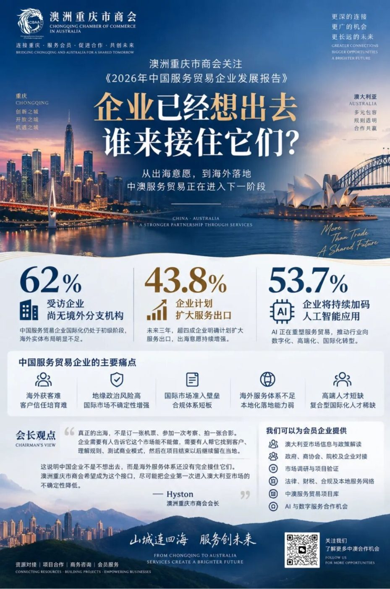

121家企业给出的答案：真正的出海，缺的不是意愿，而是海外落地能力
澳洲重庆市商会关注《中国服务贸易企业发展报告》

从“想出海”到“能落地”，中澳服务贸易正在进入下一阶段。
周三，澳洲重庆市商会再次收到中国服务贸易协会分享的专稿《2026年中国服务贸易企业发展报告》。
与此前聚焦宏观政策和区域服务贸易发展的研究不同，这一次，中国服务贸易协会课题组把视角直接放到了企业身上。
2026年7月，课题组围绕服务贸易企业经营、进出口、数字化转型、国际化布局及企业痛点等维度开展“服务贸易企业40问”专项调研，共回收121份有效问卷。
这些数据回答了一个非常现实的问题：
今天的中国企业，到底有多想出海，又为什么还没有真正走出去？
答案比“企业缺市场”复杂得多。
报告显示，未来三年，43.8%的企业明确计划扩大服务出口。但与此同时，62%的受访企业目前没有任何境外分支机构。
一边是越来越强的国际化意愿，一边是明显不足的海外实体能力。
这中间存在的，正是中国企业服务出海最值得被关注的一段“断层”。
一、企业已经想出去，但大部分还没有真正“落地”
报告显示，目前中国服务贸易企业仍以轻资产、短周期的跨境服务模式为主。线上跨境交付已经成为主要业务模式之一，而真正通过海外公司、办事处、本地团队等形式建立实体运营能力的企业，仍然只是少数。未来三年，虽然有19%的企业计划新增境外实体布局，但仍有41.3%的企业暂时没有海外机构计划。
这意味着，中国服务贸易的国际化正在进入一个非常特殊的阶段：
企业已经跨过“要不要出去”的心理门槛，却还没有完全跨过“出去以后怎么活下来”的能力门槛。对于商会而言，这个变化非常重要。过去企业寻找海外商协会，可能只是为了参加一次活动、认识几个人、安排一次商务访问。
但下一阶段，企业真正需要的是：市场信息、客户资源、本地渠道、法规合规、品牌本地化、项目执行、人才连接、政府及产业资源、以及长期经营能力。
海外商协会的价值，也正在随之变化。
二、报告里最值得商会关注的，不是增长率，而是企业的五个痛点
报告将当前中国服务贸易企业出海面临的主要问题归纳得非常清楚：海外获客难、地缘政治风险高、国际市场准入壁垒、海外服务体系不足、企业合规能力不足、其中尤其值得注意的是，企业对行业协会的需求非常具体。
46.3%的企业希望获得海外政策、法规及市场行情等精准信息；43.8%的企业希望协会帮助对接海外客户和合作伙伴；39.7%的企业希望通过国际展会、商务洽谈、海外考察等形式打开市场。
换句话说，企业真正希望协会解决的，并不是“再办一场活动”。
而是帮我看懂一个市场、帮我找到正确的人、帮我降低第一次进入这个市场的试错成本。
这也是澳洲重庆市商会下一阶段应该强化的角色。
三、澳大利亚不应该只是“企业访问目的地”
值得说明的是，这份报告并没有专门讨论澳大利亚市场。报告提到的企业海外布局，仍然较多集中于欧美以及部分新兴市场。但也正因此，澳大利亚对于中国企业而言，存在一个值得重新认识的位置。
它既不是纯粹的低成本市场，也不是单纯的商品出口目的地。对于服务贸易企业而言，澳大利亚可以成为：企业国际化能力的验证场。
一个中国品牌来到澳大利亚以后，会立刻面对一系列真实问题：
你的品牌表达是否适合当地消费者？
你的合同是否满足当地法律要求？
你的数据处理方式是否符合当地监管？
你的专业服务是否涉及资质和牌照？
你的产品背后的技术、知识产权和服务体系能否真正输出？
你的团队是否能够与当地企业、政府、院校和社区建立长期关系？
这些问题，才是真正决定一家企业能不能完成国际化的东西。
商品过了海关，不代表企业完成了出海。只有企业的服务体系、品牌体系和经营体系一起过去，国际化才真正开始。
四、AI正在把服务贸易重新洗牌
这份报告里另一个非常值得注意的数据，是人工智能。
53.7%的受访企业计划继续扩大AI应用场景。49.6%的企业已经出现低技能、重复性岗位缩减；40.5%的企业正在增加AI研发、数据合规和算法运维等技术岗位；28.9%的企业增加高端创意、决策咨询和市场研判等复合型岗位需求。
这意味着，AI对服务贸易的影响已经从“工具层面”进入“组织层面”。
未来服务贸易真正有竞争力的企业，不一定是员工最多的公司，而可能是：能够用AI缩短跨境服务链条；能够用数字化降低海外交付成本；能够快速完成不同市场本地化；能够把人才、知识与数据重新组合的企业。
对重庆企业尤其如此。从智能制造、数字内容、文旅、教育培训，到专业咨询、人工智能、工程技术和品牌服务，都有机会从过去的“产品输出”升级为：产品＋技术＋服务＋数字能力的整体输出。
五、会长观点：真正稀缺的不是企业出海意愿，而是海外“接住它”的能力
澳洲重庆市商会会长 Hyston 表示：
“这份报告里我最关注的，不是43.8%的企业准备扩大出口，而是62%的企业目前还没有境外实体。这说明中国企业不是不想出去，而是海外服务体系还没有完全接住它们。
真正的出海，不是订一张机票、参加一次考察、拍一张合影。企业需要有人告诉它这个市场能不能做，需要有人帮它找到客户、理解规则、测试商业模式，然后在项目结束以后继续留在当地。
澳洲重庆市商会未来更希望成为这样的接口。我们不是替企业承诺成功，而是尽可能把企业第一次进入澳大利亚市场的不确定性降低。”
六、澳洲重庆市商会接下来要做什么
结合此次报告反映出的企业实际需求，澳洲重庆市商会将进一步推动中澳服务贸易项目化合作。
重点包括：海外市场信息服务；持续整理澳大利亚相关产业、政策、法规及市场机会，为企业提供更具针对性的市场判断；企业定向对接；根据企业真实需求，对接澳大利亚企业、政府机构、商协会、院校及专业服务机构；市场验证机制；协助企业在正式投入之前，通过小规模项目、市场调研、渠道测试和商务洽谈验证市场；本地服务网络；逐步链接法律、财税、移民、品牌、媒体、招聘、活动、场地等专业资源，形成企业进入澳大利亚后的基础服务网络；中澳服务贸易项目库；推动企业需求从“一次性询问”进入长期项目管理，并逐步形成可持续跟进机制；AI与数字服务合作；关注AI、数字内容、跨境软件、数字营销及新型专业服务领域，推动新的中澳服务贸易项目。
中国服务贸易正在快速增长。但下一阶段真正决定企业能否完成国际化的，不只是出口额。
而是中国企业能否在海外市场：
被理解
被信任
被选择
并最终留下来。
121家企业的回答已经非常清楚。
它们需要的不只是更多“走出去”的机会。
它们需要一个更完整的海外服务体系。
从中国企业的出海意愿，到澳大利亚市场的真实落地，中间还缺很多座桥。
澳洲重庆市商会希望成为其中一座。